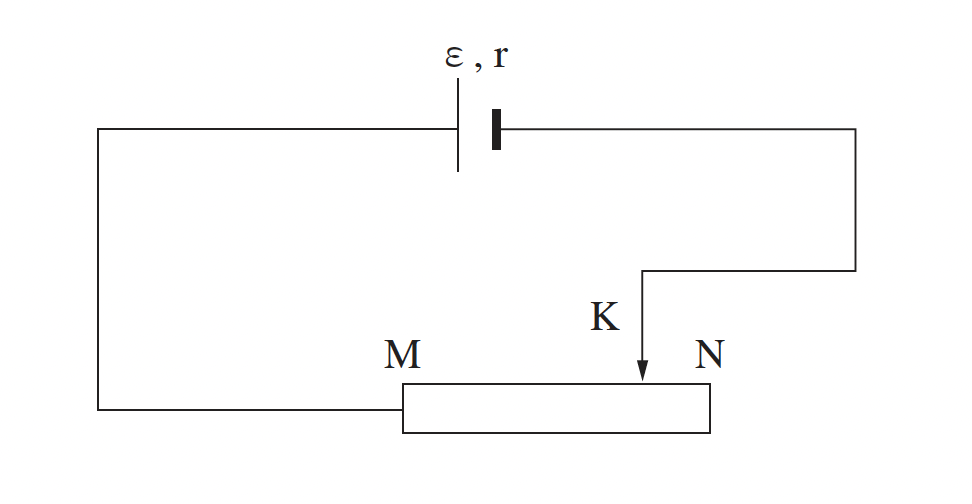

שאלה 3
תלמידה במגמת פיזיקה בנתה מעגל חשמלי המוצג בתרשים שלפניכם.
רכיבי המעגל: מקור מתח שהכא"מ שלו ε והתנגדותו הפנימית r, תילים מוליכים אידאליים ונגד משתנה
שקצותיו M ו- N והמגע הנייד שלו K.

התלמידה הציבה את המגע הנייד K בנקודות שונות על פני הנגד המשתנה, ובכל פעם מדדה את I, עוצמת הזרם במעגל, ואת V, המתח בין הנקודה M לבין הנקודה K.
תוצאות המדידות מוצגות בטבלה שלפניכם.
| I (A) | 0.5 | 1.0 | 1.5 | 2.0 | 2.5 |
| V (V) | 4.9 | 3.9 | 3.2 | 2.0 | 0.8 |
אחד מזוגות המדידות שבטבלה מתאים למצב שבו המגע הנייד K היה בקצה N של הנגד המשתנה.
מהי עוצמת הזרם במצב זה? נמקו את תשובתכם. (6 נקודות)
סרטטו דיאגרמת פיזור (נקודות במערכת צירים) של המתח, V, כפונקציה של עוצמת הזרם, I.
הוסיפו לדיאגרמת הפיזור את הישר המתאים לה ביותר (קו מגמה).
(8 נקודות)
השתמשו בגרף שסרטטתם ורשמו את ערך הכא"מ ε של מקור המתח. בגרף שסרטטתם סמנו (בצורה בולטת) את הנקודה שבה השתמשתם לקביעת תשובתכם. (6 נקודות)
השתמשו בגרף וחשבו את ההתנגדות הפנימית r של מקור המתח. (5 נקודות)
קבעו מהי עוצמת הזרם המתאימה למצב שבו המגע הנייד נמצא בנקודה M. (4 נקודות)
על פי נוסחת חוק אוהם, כאשר המתח גדֵל - גם עוצמת הזרם גדֵלה. אבל במדידות של התלמידה, כאשר המתח גדל - עוצמת הזרם קָטְנה. האם תוצאות המדידות עומדות בסתירה לחוק אוהם? נמקו את תשובתכם. (4.33 נקודות)